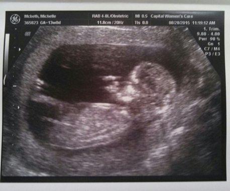

Preggers
Saturday, September 26, 2015
 As you can see from the picture, and probably guess from the title of this blog post, I am pregnant. About 17 weeks pregnant, which you can probably figure out by inspecting the photo closely and doing some math.
No, it hasn't been a smiles and roses. And I'm immensely thankful to the friends who have been brutally honest about their pregnancies. If I had to go through the last 17 weeks thinking that everyone spends all 40 weeks glowing and rubbing their bellies, I'd be pretty pissed in thinking I was getting a raw deal. As it is, it hasn't been horrible at all in comparison to some stories I've heard, but there's plenty annoying and unpleasant things about it.
I just finished reading a book by an acquaintance of mine: Feeling My Way: Finding Motherhood Without Loosing Myself. It was lovely and honest and funny and surprising. It's very interesting to hear the tale of someone who goes from ambivalence about having a child at all, to fiercely wanting to share every moment of life with her. Then comes the unexpected result of having an internal struggle to find a balance between motherhood and selfhood.
It seems like for a lot of women (and some men) it's like a switch goes off and suddenly nothing else really matters. I have had a few friends for whom this didn't happen. Friends who were impatient to get back to work and normal life. I wonder which side I'll end up on.